1. Working With the Landscape Tools
Last edited: 8/9/2017
Creating a Landscape inside of Unreal Engine 4 (UE4) can be done in a few simple steps. But before we dive into creating our first Landscape, let us first familiarize ourselves with some of the tools and keyboard inputs that are most commonly used to interact with the Landscape system.
Opening the Landscape Tool
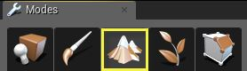
All of the tools that are used to interact with the Landscape system can be found under the Landscape icon that is located on the Modes Tool Bar. To enable the Landscape tools click on the icon that looks like mountains.
Manage, Sculpt, and Paint Mode
The Landscape tool has three modes, Manage, Sculpt, and Paint that are accessible by clicking on their icons at the top of the Landscape's toolbar window. Each mode will allow you to interact with the Landscape in a different manner. Here is a very quick rundown of what each mode allow you to do.
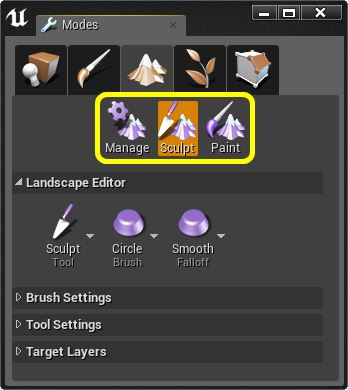
2. Creating a new Landscape
Creating a new Landscape is actually a simple process that we will be going over in the next few steps. However before we begin to create our Landscape, lets first create a new project Blueprint First Person Project. If you are unfamiliar with how to create a new project, please check out the following page on how to Create a New Project
Creating a Landscape
-
First, create a new Blueprint First Person project if you have not done so already. While you can use other templates for this tutorial, the Blueprint First Person Project will make it a little easier to inspect your Landscape.
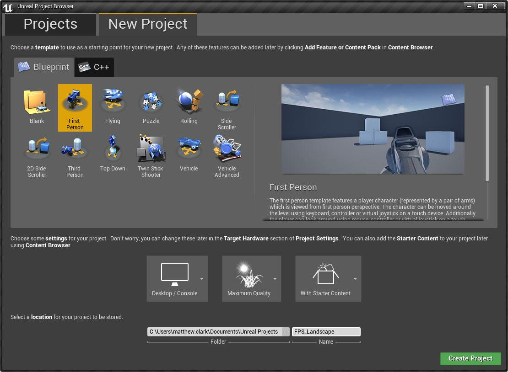
-
Once you have created your new project and the editor has been loaded, create a new level using File->New Level and select the Default Level from the New Level Template.
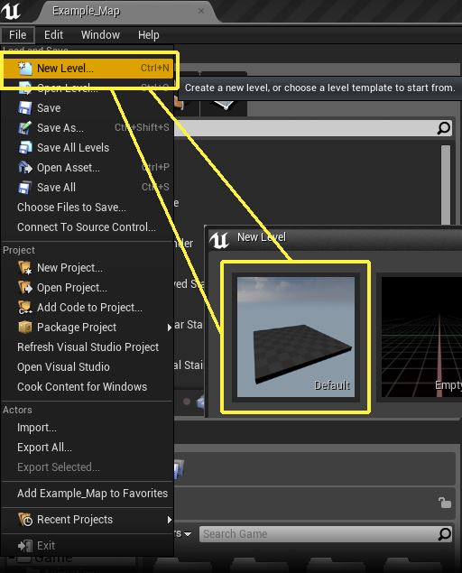
-
With your new level now created, select the Floor from the level and press the Delete key to remove it from the level.
TIP:
Make sure that you select your player start and move it up slightly in the Z axis. This will make sure that your player does not start under your newly created Landscape.
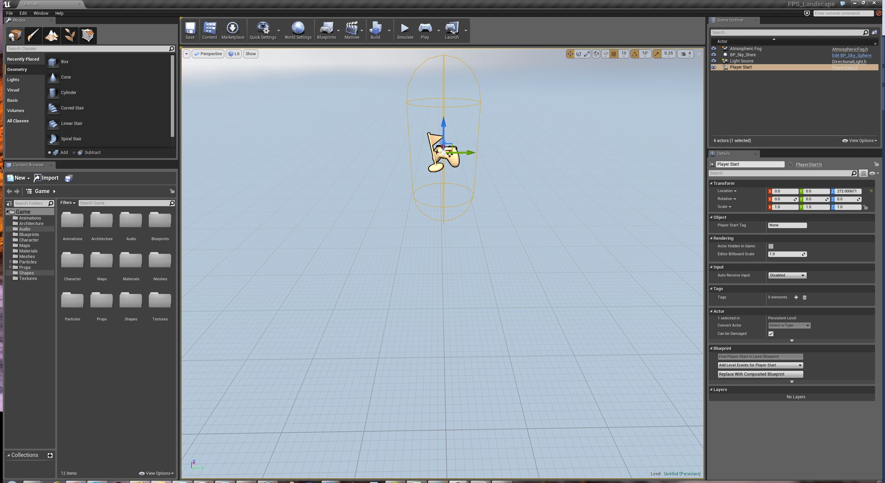
3. Sculpting the Landscape
Sculpting the Landscape is a rather easy but time consuming process. All of the tools used for sculpting can be found under the Sculpt icon in the Landscape tools. If you would like to know more about what each of the Sculpting Tools does in detail, you can read the Sculpt Mode page. For quick reference, here is a list of the most common key and mouse interactions that are used when sculpting the Landscape.
For this part of the Landscape tutorial, we are going to start with a completely flat section of the Landscape and then build up the details as we go along. The goal here is not to exactly mimic what was created in the tutorial but to get you familiar and comfortable with using the various Landscape tools.
TIP:
There could be a lot of various reasons as to why what you do in this tutorial does not come out exactly the same as what you see in the following screen shots. Working with the Landscape tools requires a lot of trial and error so your results will vary, sometimes greatly, from what you are seeing in the following set of images. The most important thing to get out of this tutorial is to understand how each of the Landscape tools work and how all the tools work together to give you the final product.
-
To begin, first find a section of the Landscape that you would like to work with. For this tutorial, we are not going to be filling in the entire Landscape but just a section of it. For ease of use, you should set a camera bookmark by pressing Ctrl + 1 on the keyboard. This will set a camera bookmark which will make it easier for you to gauge how your Landscape is coming along by giving you a camera view to always come back to. At any time during your editor session, if you press the 1 Key, your camera will be returned to the exact same position that you set.
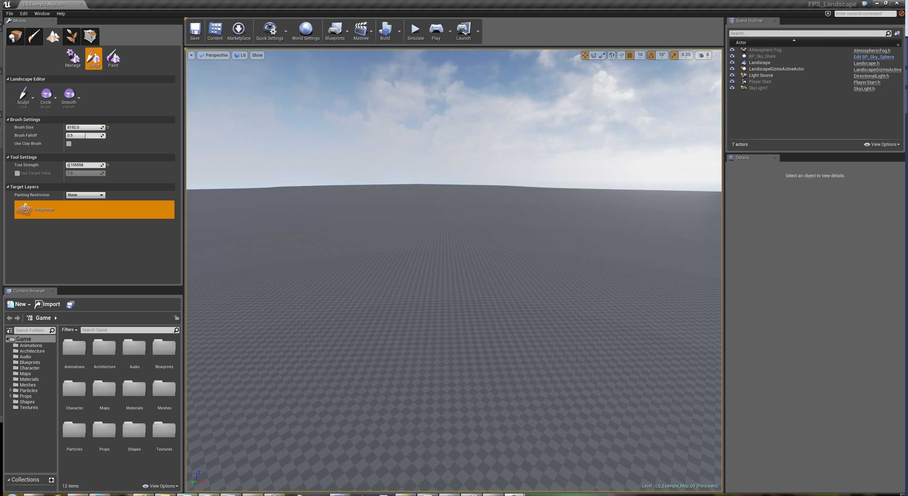
-
Now with the bookmark set, begin painting in the larger details for hills and valleys using the Sculpt Tool. You can find the brush size and strength settings that were used for this step listed below and when completed, you should have something that looks like the following.
TIP:
Remember that you use Left Mouse Button to raise the Landscape height and Shift + Left Mouse Button will lower the height of the Landscape.
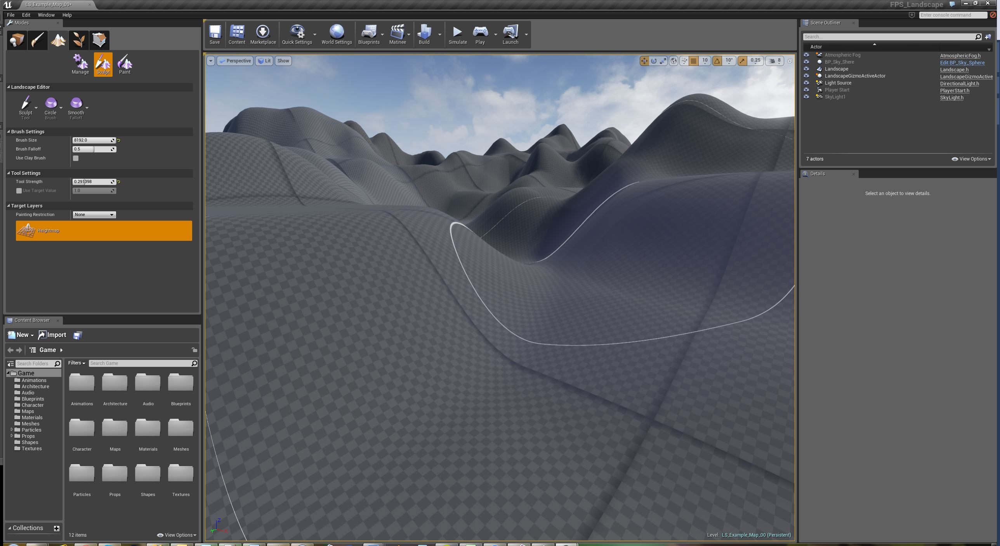
-
With the hills and valleys now blocked out, it is time to use the Smooth Tool to help refine the look and feel of them. You can find the brush size and strength settings that were used for this step listed below and when completed, you should have something that looks like the following.
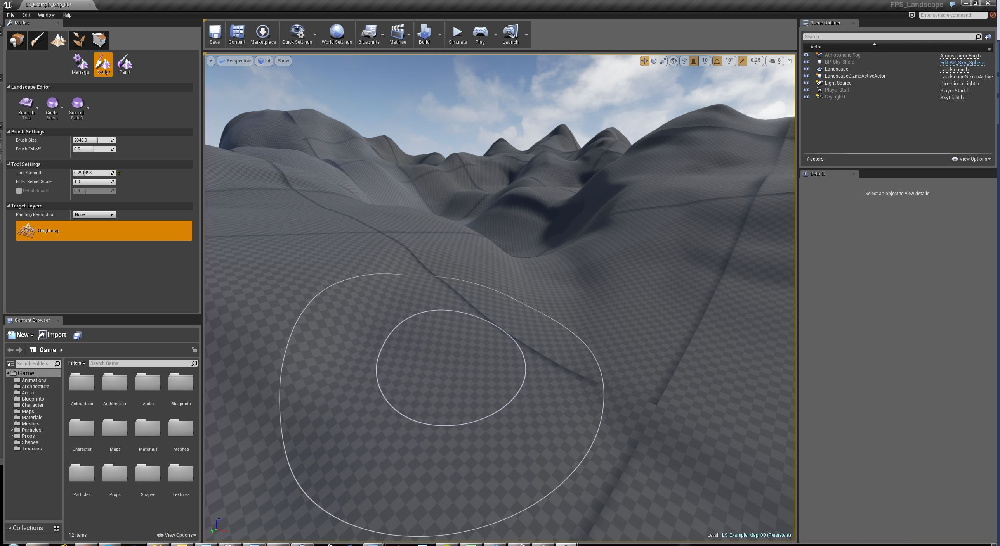
4. Creating Landscape Materials
Now that we have finished sculpting out the Landscape, it is now time to add some Materials to it so that it will better resemble something that we would see in the real world. But before we do this, let us first setup some folders so that the content that we create and migrate has somewhere to be stored. For this section of the tutorial, we are going to be making the following four folders.
Creating a Landscape
-
Landscape
-
Materials
-
Resources
-
Textures
When completed, you should have something that looks like the following.
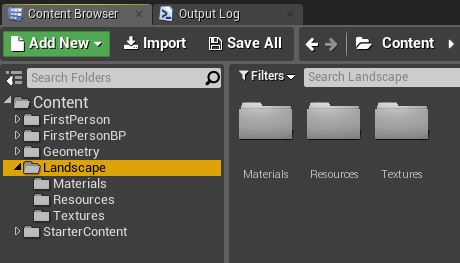
Migrating Textures
Now that we have the folders in place, it is time to Migrate some Textures from the Landscape Content Example project so that we have some Textures to work with.
TIP:
When Migrating content between projects, you could possibly end up with additional folders that you do not want. To fix this, select the Textures that you want inside of the Content Browser and then drag them from their current location into the folder that you want them to be placed in. This is purely a house keeping step and will have no impact on the outcome of the tutorial.
You can find the textures located in the following folder located in the Landscapes Content example project.
/Game/ExampleContent/Landscapes/Textures/
The Textures that we will be Migrating over from the Landscape Content Example project are as follows.
- T_ForestGround_D
- T_ForestGround_N
- T_GroundGrass_D
- T_GroundGrass_N
- T_Noise_N
Once you have the textures migrated over, make sure they are placed in the Textures folder that was created in the steps above. Once that has been completed, it is now time to create our Material for the Landscape.
Creating the Landscape Material
Creating a Material for our Landscape can be done in the following steps.
Navigate to the Materials folder.
Right-click in the Content Browser and select Material from the Basic Assets list.
Name the newly created Material something that will allow you to easily find it like Landscape_Material for example.
TIP:
If you have not done so already, please check out the Materials
pages to gain a more in-depth understanding of how materials work inside of Unreal Engine 4.
Once this has been completed, you should have something that looks like this.
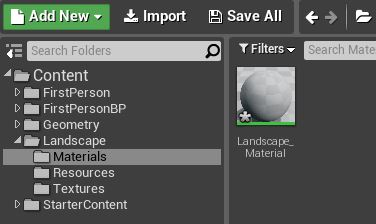
5. Painting Landscape Materials
With the Landscape material now created, it is now time to apply that Material to the Landscape and begin using the Landscape Paint tools to paint the Landscape.
Landscape Painting Prep
Before we can begin painting the Landscape, there are a few things that we have to setup up first. The first thing that we have to do is apply our Landscape Material to the Landscape. This can be done in the following simple steps.
-
First, find our Material in the Content Browser. This should be located under a folder labeled Materials that was created in the previous section. When you find it, make sure that you click on it so that it is selected.
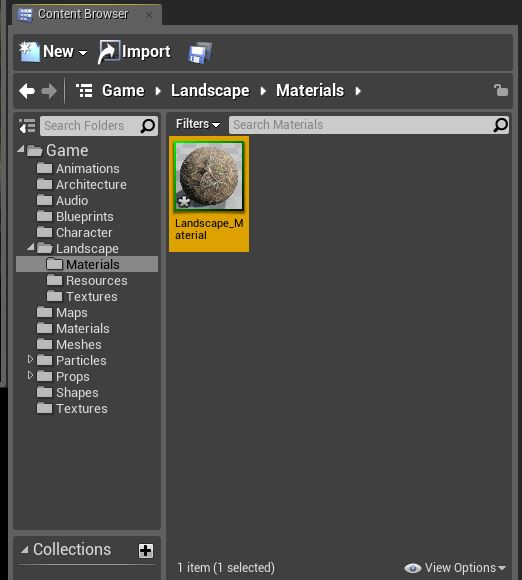
-
With the Landscape Material selected in the Content Browser, select the Landscape in the world by clicking on it. Then, in the Details panel, expand the Landscape section and look for the Landscape Material input.
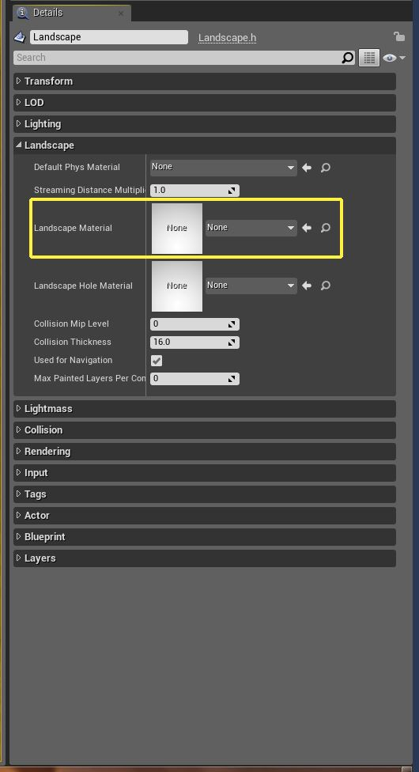
-
Apply the Material to the Landscape using the Use Selected Asset from the Content Browser arrow icon.
TIP:
The black lines that you are seeing in the image above come from having Un-Built lighting on the Landscape. If you re-build your level's lighting, the black lines will go away.
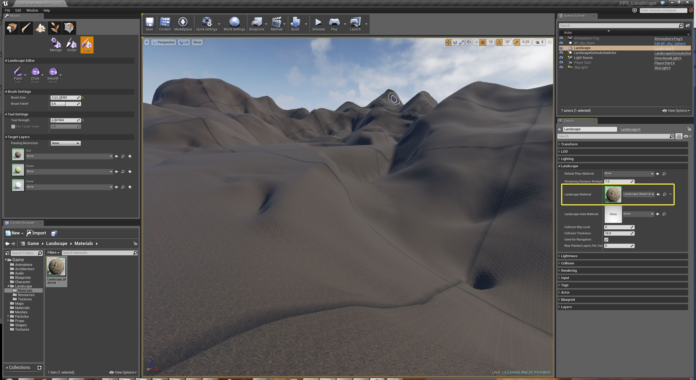
6. Landscape Tips and Tricks
While the previous quick start tutorial for Landscape will get you up and running with a Landscape, it barely scratches the surface of what the Landscape tools can actually do. This section aims to show you some Tips and Tricks of using the Landscape Tool as well as some external tools that you can use to generate your Landscape.
Tips & Tricks
-
When using the Paint Tools, you might find it easier to paint over what you would like to erase than to try and erase it using Shift + Left Mouse Button.
-
When using the Alpha Brush, remember that you can change what the pattern that the brush uses by selecting a different RGB channels from the Texture Channel drop down menu. This is very handy because you can pack up to three different Alpha patterns in a single texture.
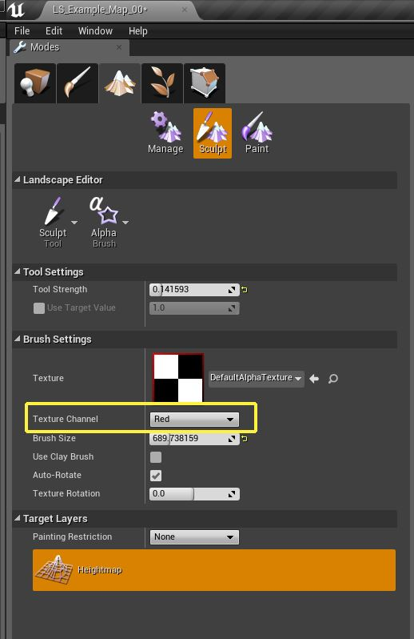
-
Landscape compiles shaders separately for each component based on which layers are painted on them. So, for example, if you have a component with a dirt layer on it but no trace of the grass layer has been painted on it, the textures for the grass layer are left out of the material for that component, making it cheaper to render. So when do an optimization pass, it can be worthwhile to go over a Landscape and look for components that only have a tiny trace of a given layer and erase them to reduce material complexity.
-
Another issue to watch out for when painting layers is to avoid having too many textures on one component. The material editor stats show the limit of how many texture samples you are allowed to use, but for Landscape materials the masks for each layer count as texture samples too and do not show in the stats. If a component starts showing the default texture (Grey Squares) when you paint a new layer onto it, it is likely that it is gone over the texture sample limit and either needs to have a layer erased or the material needs to be optimized to use less textures.
-
You can change the LOD Distance Factor for individual Landscape components so they will simplify at closer or further distance thresholds. Things like mountain peaks or anything with a distinct silhouette will LOD the most noticeably as you move further away, so you can reduce the LOD bias for those components to preserve their shape. You can also raise the LOD bias for low-detail areas like flat plains that will not look noticeably different with less tessellation.
World Composition